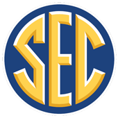

ETL Services Test
This example is displays the results of calling api/v1/pit/fbsFootball API with a given point in time.
 Our scenario...
Members of the SEC have won many national championships: 43 in football, 21 in basketball, 41 in indoor track, 42 in outdoor track, 24 in swimming, 20 in gymnastics, 13 in baseball (College World Series), and one in volleyball. In 1992, the SEC was the first NCAA Division I conference to hold a championship game (and award a subsequent title) for football and was one of the founding member conferences of the Bowl Championship Series (BCS). The current SEC commissioner is Greg Sankey, who has been the commissioner since 2015. The conference sponsors team championships in nine men's sports and twelve women's sports.
The conference is successful financially, with high revenue distribution to its members. During the fiscal year 2014–15 an SEC record $455.8 million was generated,[2] which was a sizable increase over the $292.8 million for the 2013–14,[3] largely due to the revenue from the introduction of the SEC Network, a television network operated by the conference dedicated to SEC conference athletic events.
SEC circa 2012
As of 2012, the SEC looked like this.
SEC Updates
However, in 2012, Georgia Tech and Tulane left (delete) and Missouri and Texas A&M were addeed (insert).
In 2021 my daughter will be attending  South Carolina, so we'll also update the enrollment by 1,
from 35,364 to 35,365 (update).
South Carolina, so we'll also update the enrollment by 1,
from 35,364 to 35,365 (update).
SEC Today
Minus Georgia Tech and Tulane, plus
Missouri and Texas A&M, and
South Carolina enrollment 35,365.
Enter either a "Point in time" in the format yyyy-MM-d-hh.mm.ss.0, or CURRENT TIMESTAMP, or All